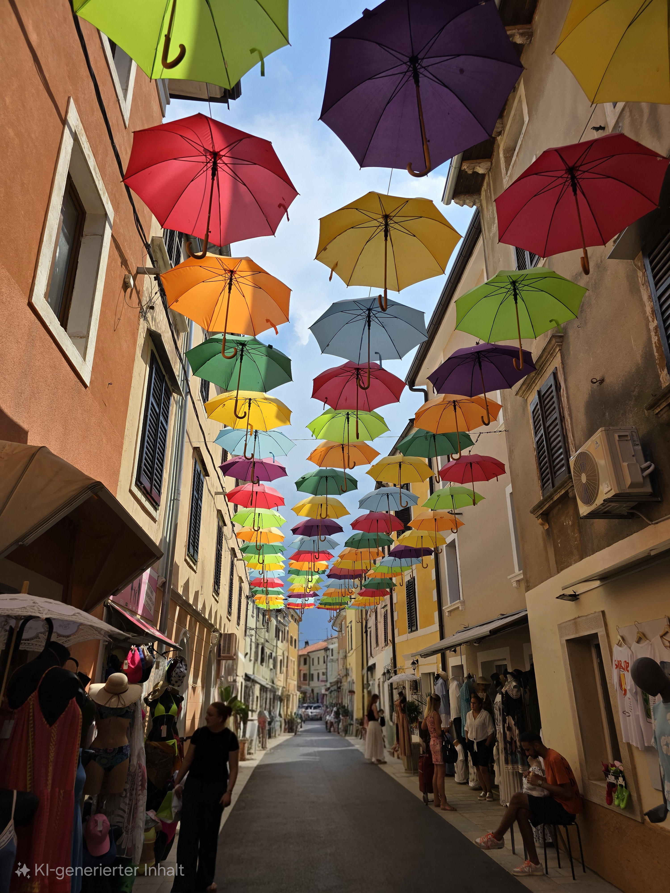

Willkommen zu meinen Reiseerfahrungen
Entdecken Sie meine Reiseabenteuer und Erfahrungen aus verschiedenen Ländern und Kulturen.
Bereiste Länder
Bisher bereiste Länder: 7
Deutschland
Österreich
Kroatien
Spanien
Portugal
Griechenland
Polen
Interaktive Karte
Reiseimpressionen



Kommende Reisen
| Land | Stadt | Zeitraum |
|---|---|---|
| Frankreich | Paris | 10.01.2026 - 15.01.2026 |
| Spanien | Valencia | 16.01.2026 - 23.01.2026 |
| Deutschland | Köln | 11.11.2026 |